Новый сайт Уральского федерального университета, собранный вокруг задач людей, а не вокруг устройства университета.
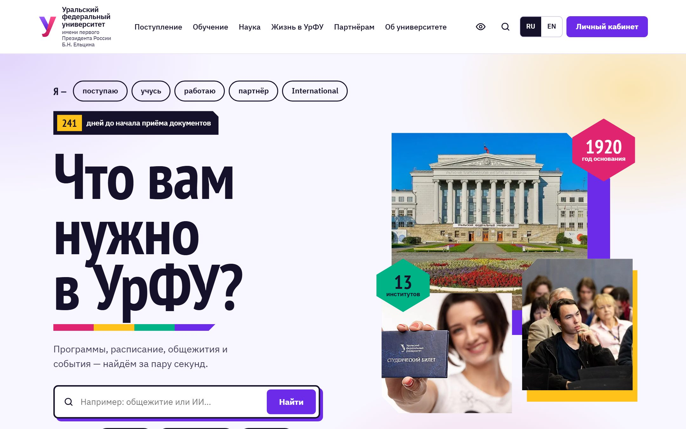
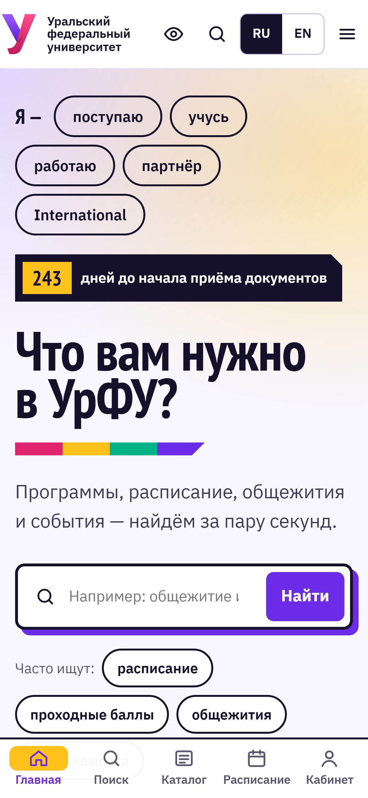
gagamix228.github.io/urfu-redesignНаведите камеру телефона — сайт откроется.
Код: github.com/GAGAMIX228/urfu-redesign
Человек приходит на сайт университета с задачей: узнать, хватит ли баллов, найти расписание, заселиться в общежитие. Сейчас urfu.ru показывает ему устройство университета. Новый сайт показывает ответ.
Разделы по задачам вместо двух рядов по оргструктуре
Без 206 ссылок, спрятанных в выпадающих меню
Сумма по 7 частым задачам, где ответ на urfu.ru есть
WCAG 2.2 AA, проверка axe на всех страницах, телефон и компьютер
Мы разобрали главную страницу urfu.ru по её копии в веб-архиве от 12 октября 2026 года и прошли по ней частые задачи. Цифры посчитаны по коду страницы, а не на глаз.
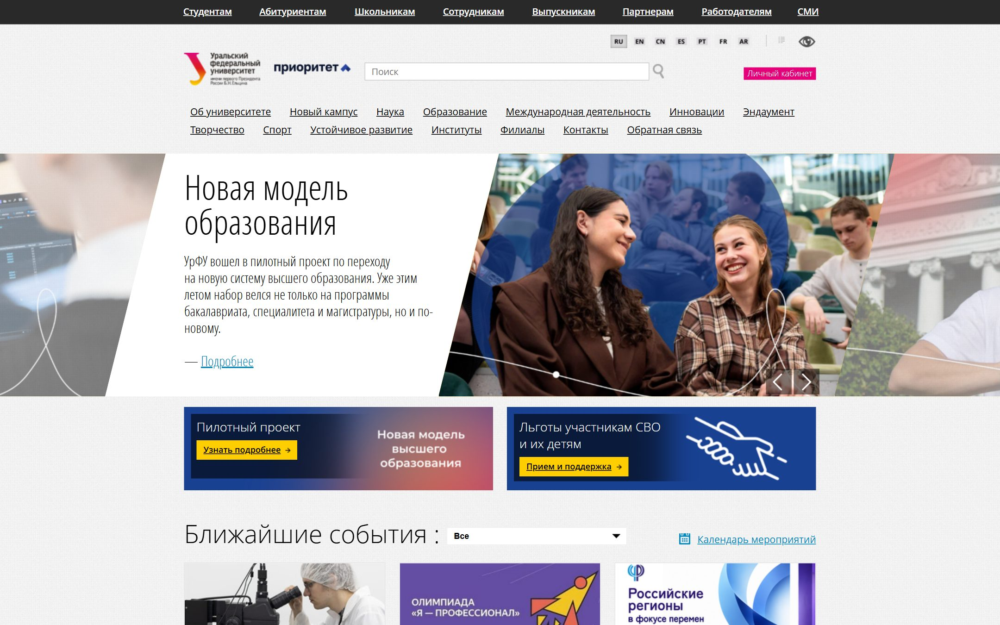
Главная urfu.ru сейчас. Два ряда меню: 8 пунктов «для кого» и 14 — по устройству университета.
206 спрятаны в выпадающих меню. В одном меню «Абитуриентам» — 67 ссылок.
«Все разделы» (8 — для кого) и «Меню» (14 — по устройству университета).
115 ссылок с главной уводят на поддомены и внешние сайты — у каждого своё меню.
Есть только «Поселение». Адресов общежитий нет и на самой странице «Поселение».
«Списки поступающих», «Списки зачисленных», «Спорт» — по 5 раз на главной.
Студенту, сотруднику, партнёру, участнику ВЭД. В меню «Партнерам» — пустой раздел.
На них держится каждая страница. Если новое решение им противоречит — меняем решение, а не принципы.
Шесть разделов вместо оргструктуры: Поступление, Обучение, Наука, Жизнь в УрФУ, Партнёрам, Об университете. Человеку не нужно знать, как устроен университет, чтобы найти ответ.
«Я поступаю», «Я учусь», «Я работаю», «Я партнёр», «International» — главная перестраивается под роль: свой заголовок, порядок блоков, панель «Главное для вас».
Приём, каталог, институты, общежития — разделы одного сайта с общим шаблоном. Один поиск понимает «общага» и «стипуха» и прощает опечатки. Один вход в кабинет.
Нижняя панель на телефоне, всё от 320 пикселей ширины. Контраст WCAG AA, работа с клавиатуры, версия для слабовидящих поверх любой страницы.
Эндаумент, Инновации, Устойчивое развитие, Новый кампус, Филиалы — важны, но нужны немногим. Теперь они внутри «Об университете», в одном клике.
8 вкладок «для кого» → 5 ролей на главной. Творчество и Спорт → «Жизнь в УрФУ». Контакты и Обратная связь → один справочник служб с поиском. 4 кабинета → один вход.
Подбор программы за 3 вопроса, расписание с поиском группы, цены общежитий таблицей, центр помощи, календарь событий, умный поиск, отсчёт до приёма документов, английскую версию.
Одна кнопка на первом экране — и страница перестраивается: заголовок, порядок блоков, подсказки поиска и панель «Главное для вас». Выбор запоминается.
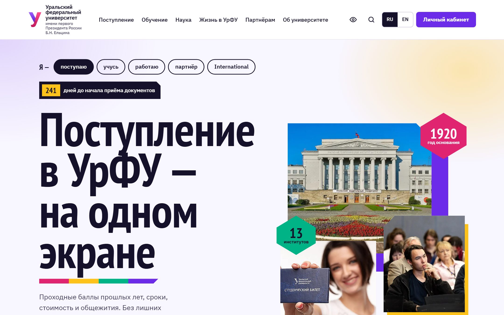
«Поступление в УрФУ — на одном экране» — проходные баллы прошлых лет, сроки, стоимость и общежития.
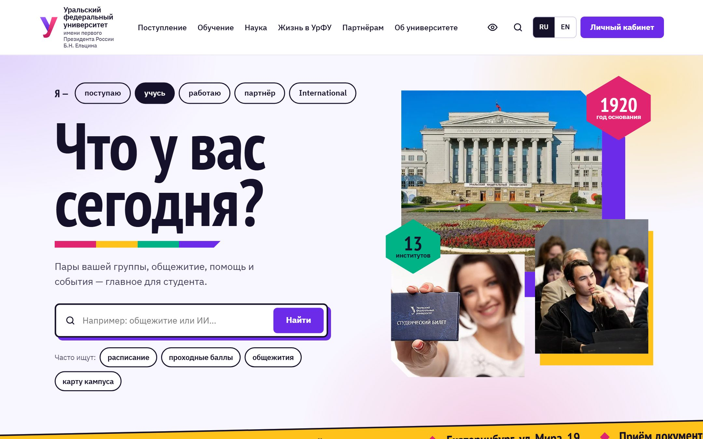
«Что у вас сегодня?» — пары группы, общежитие, помощь и события на первом месте.
Считаем действия от главной до ответа: открыть меню, нажать ссылку, скачать файл. 0 — ответ виден на главной сразу. Где мы не лучше — так и пишем.
| Задача | urfu.ru сейчас | Новый сайт |
|---|---|---|
| Хватит ли моих баллов на бюджет | 2Меню «Абитуриентам» → «Калькулятор ЕГЭ» — открывается отдельный сайт | 0Ползунок баллов на главной: на сколько программ проходишь и сколько там бюджетных мест |
| Когда подавать документы | 2Меню «Абитуриентам» → «Календарь приема» → таблица | 0На главной: дата начала приёма и отсчёт дней |
| Сколько стоит обучение | 3Меню → «Стоимость обучения» → приказ PDF на 16 МБ, найти свою программу | 1«Каталог» — цена за год в карточке каждой программы |
| Адрес общежития | —«Поселение»: порядок заселения, а адресов нет — только на отдельном сайте кампуса | 1«Общежития» на главной → карта и список с адресами |
| Сколько стоит общежитие | 4Меню → «Поселение» → «Плата за проживание» → скан приказа в PDF, 3 МБ | 1«Общежития» → таблица: сколько в месяц, вдвоём в комнате |
| Расписание своей группы | 2Меню «Студентам» → «Расписание занятий» → ввести группу | 1«Расписание» → номер группы. Сайт запоминает группу — в следующий раз сразу пары |
| Телефон приёмной комиссии | 1Значок телефона в шапке → список служб | 0Внизу главной, рядом с контакт-центром |
| Версия для слабовидящих | 1Значок в шапке → отдельная версия сайта | 1Значок «глаз» → панель поверх любой страницы. Здесь мы не быстрее — но не нужен отдельный сайт |
| Итого по 7 задачам, где ответ на urfu.ru есть | 15действий | 4действия |
От «куда я прохожу?» до «как заселиться» — без PDF-приказов и отдельных сайтов.
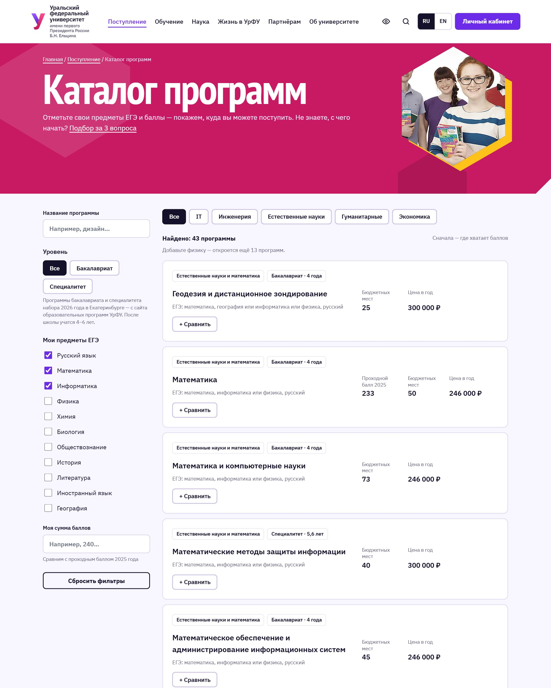
Каталог программ.
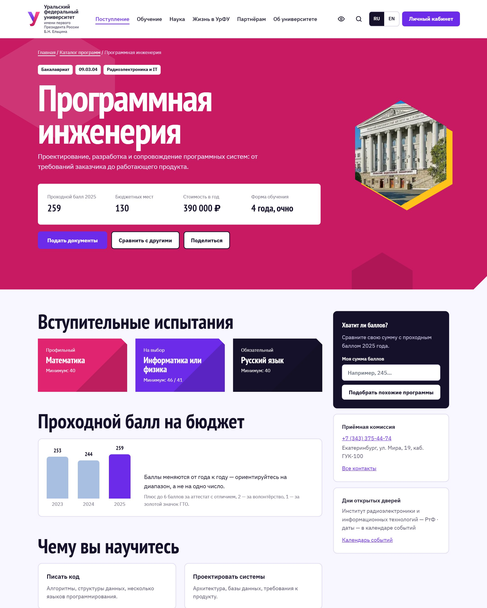
Страница программы.
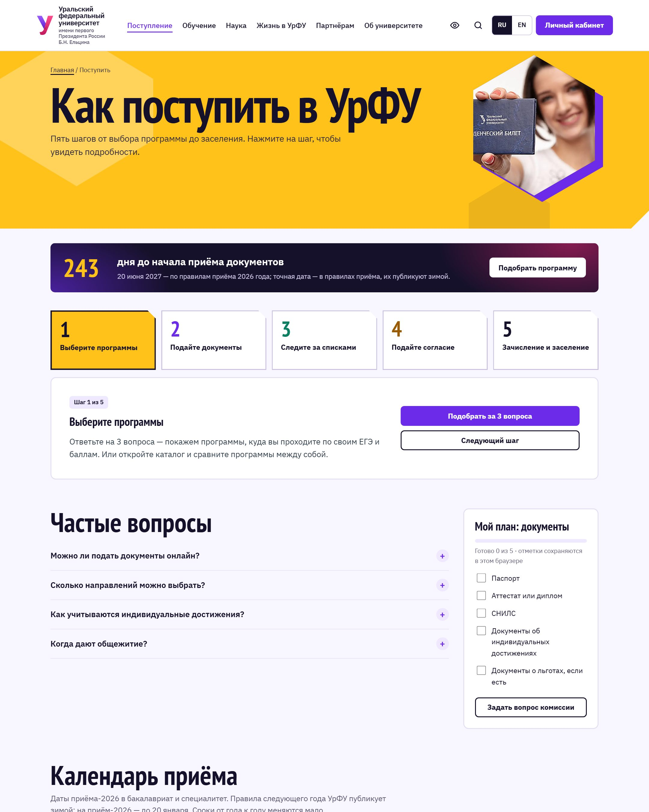
Как поступить.
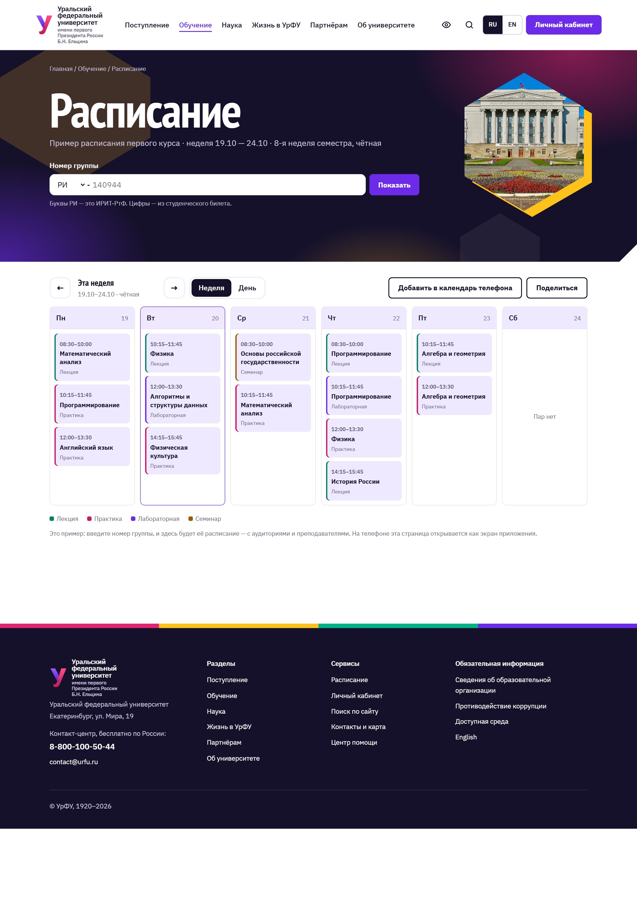
Расписание группыБуквы группы списком, дефис ставится сам. Недели, вид «день», «идёт сейчас», добавить в календарь телефона. Пары — пример, подписано.
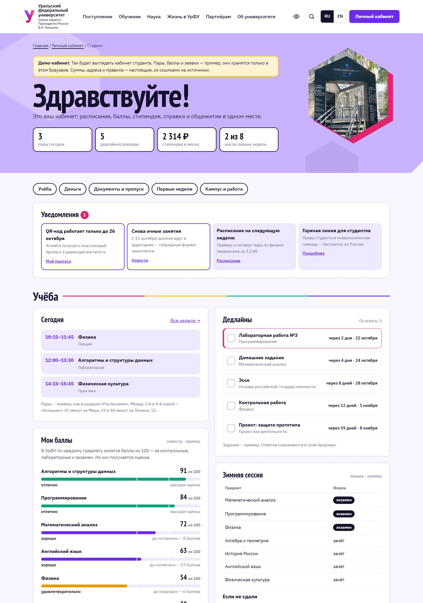
Кабинет студентаБаллы по шкале БРС, калькулятор стипендии по суммам 2026 года, пропуск, чек-лист первокурсника. Демо — подписано на странице.
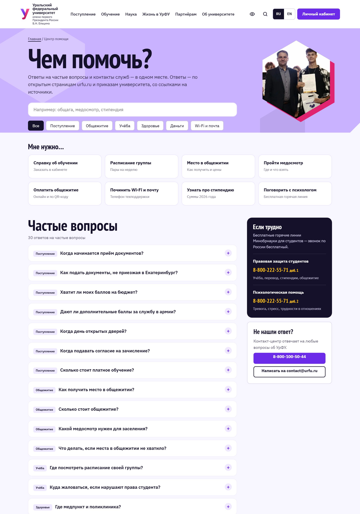
Центр помощи30 ответов с источниками, «Мне нужно…», справочник служб, словарик первокурсника: «большак», «пекус», «хвостовка».
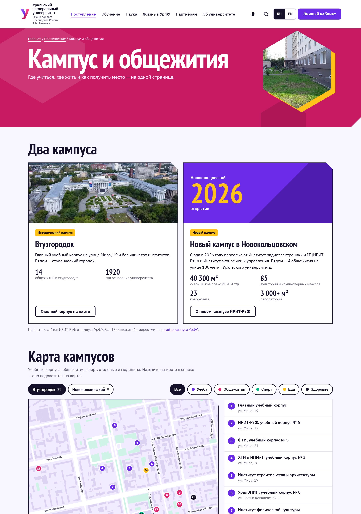
Кампус и общежитияЦена каждого общежития по приказам УрФУ, карта двух кампусов, заселение по шагам, коридор или секция.
Абитуриенты и студенты открывают сайт в основном с телефона. Поэтому каждый экран проверен на ширине 320–430 пикселей.
Главная
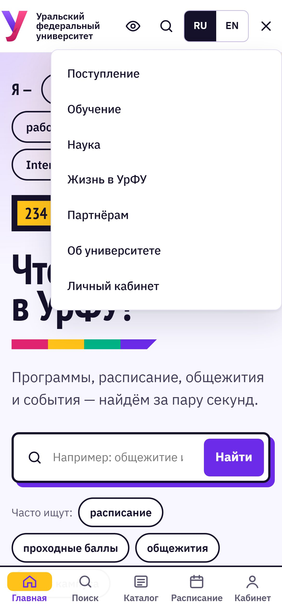
Меню — 6 разделов
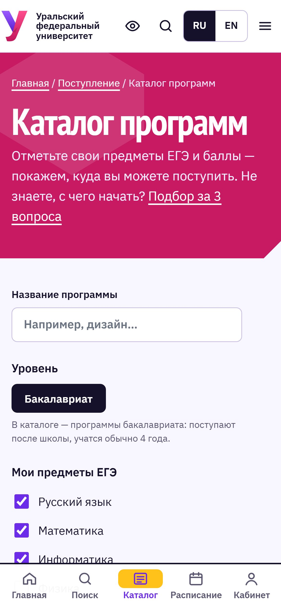
Каталог
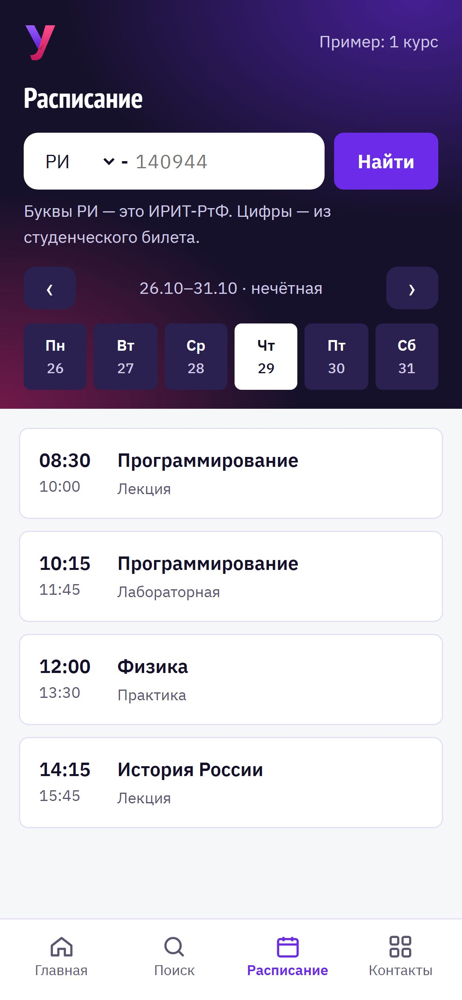
Расписание
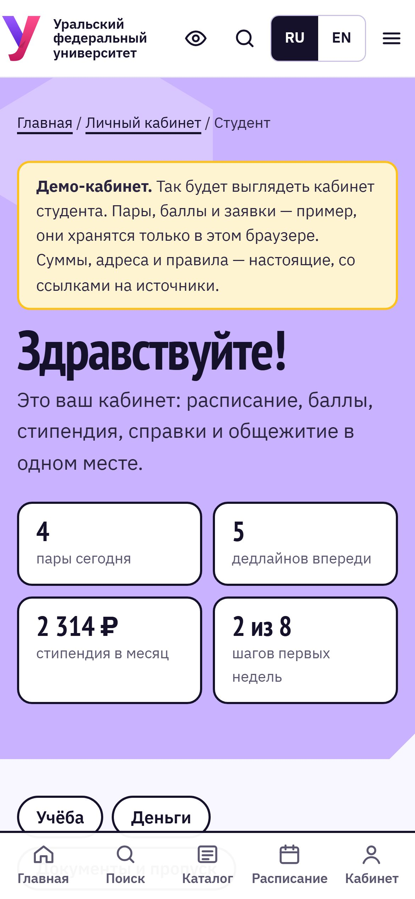
Кабинет
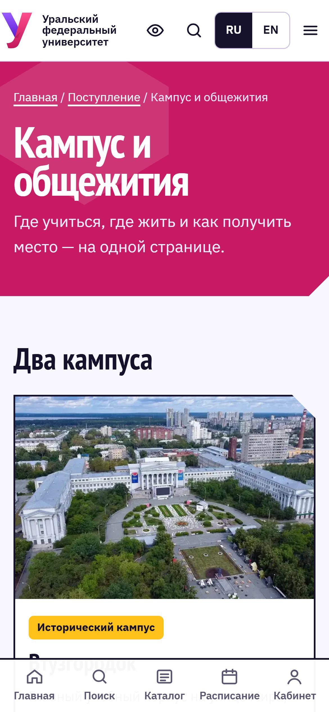
Общежития
Буква «У», сложенная из ленты аметистового и родонитового цвета. Читается и в шапке сайта, и на значке вкладки 16 пикселей. Есть одноцветные версии.
Сочные цвета уральских самоцветов: родонит — камень Екатеринбурга, золото, малахит и аметист. Ими окрашены роли на главной, шапки разделов и плитки.
Четыре цвета подряд — под заголовками и в подвале. Узнаётся с одного взгляда.
Как грань огранённого камня: у плашек, кнопок-меток и карточек.
Форма кристалла — для главных цифр рядом с фото.
Один набор цветов, шрифтов и элементов на всех страницах. Контраст посчитан по формуле WCAG — для обычного текста нужно не меньше 4,5 : 1.
Узкий и плотный — как надписи на фасадах. Длинные русские слова помещаются в заголовок даже на телефоне.
Основной текст — 16–19 пикселей, межстрочный интервал 1,5. Подписи — 14–15, не меньше 13. Полужирный — для цифр и главного в строке.
Оба шрифта лежат на самом сайте — без внешних сервисов.
Рамка 3 пикселя цвета аметиста вокруг того, что выбрано с клавиатуры.
Три размера на весь сайт — заданы один раз в site.css.
Поля по краям: 32 на компьютере, 16 на телефоне, 12 на самых узких.
Сайт университета должен работать для каждого: с плохим зрением, без мыши, на старом телефоне.
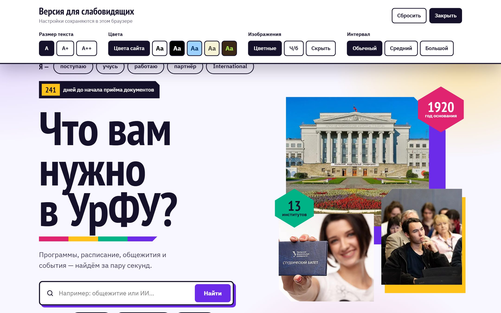
Не отдельный сайт, а панель поверх страницы: размер текста, 5 цветовых схем, изображения, интервал. Настройки запоминаются.
Или до которых там нужно долго идти. Каждая — рабочая страница прототипа, а не картинка.
Цифры, даты, цены и контакты взяты из открытых источников. Где показан пример (пары в расписании, демо-кабинет, поиск в списках), это подписано прямо на странице.
Календарь приёма, контакты, научные проекты и школы, ответы приёмной комиссии — копии в веб-архиве
Цены всех общежитий
Учебный план, преподаватели, партнёры и проекты программ
Суммы стипендий 2026 года, пропуск, заселение, словарик, 29 организаций — privet.urfu.ru
История и лаборатории ИРИТ-РтФ, шкала БРС, мероприятия для школьников
РИА Новости, «Коммерсантъ», ОТВ, E1.ru — новости и итоги приёма
ошибок доступности (axe, WCAG 2.2 AA) на всех страницах
адрес обойдён роботом — без битых ссылок и ошибок скриптов
пикселей ширины — ничего не вылезает за экран
весит обычная страница; без внешних сервисов и чужих скриптов
до главного блока на телефоне при медленном мобильном интернете; норма — до 2,5 с
Прототип — обычные HTML, CSS и немного JavaScript, без фреймворков и внешних сервисов. Шаблон и стили переносятся в систему, с которой работает редакция. Запускать можно по частям, не выключая urfu.ru.
Новая версия — по кнопке «Попробовать новый сайт», старый работает как работал. Смотрим, что ищут и не находят.
Готово уже сейчасКаталог и цены — с programs.edu.urfu.ru, расписание — из базы «УрФУ.Учеба», вход — через id.urfu.ru.
Нужен доступ к даннымПо одному: сначала для поступающих, потом для студентов. Со старых адресов — постоянная переадресация.
Раздел за разделомСайты институтов и служб получают ту же шапку, меню и подвал — человек не «выпадает» на чужое меню.
40 сайтов в ссылках с главнойпунктов меню
ссылок на главной
других сайтов в ссылках с главной
действий до ответа по 7 частым задачам
адрес общежития: на urfu.ru не найти
Сайт, где человек находит ответ, а не устройство университета. Работающий прототип: 27 страниц, только настоящие данные, 0 ошибок доступности.